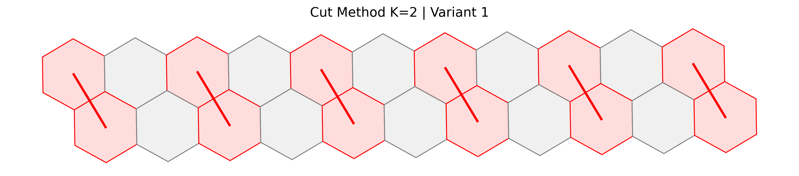
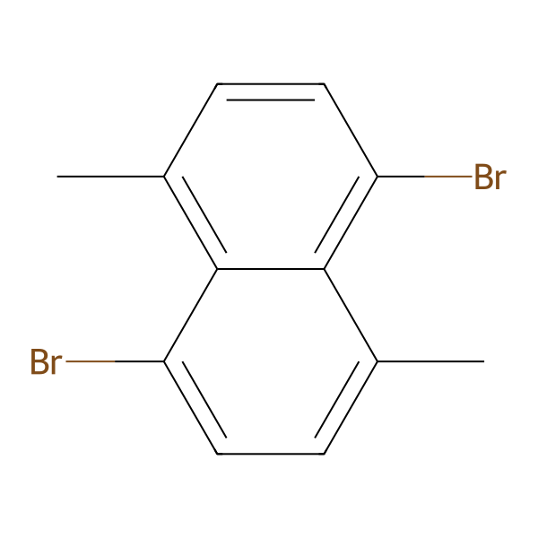

石墨烯纳米带 (GNR)
智能切割与分析系统
基于图论与周期性边界条件的化学分子拓扑切割框架，自动生成完美边缘构型，并集成大语言模型 (LLM) 进行自动化化学合理性评判。
Abstract
在全新的 v2.0 版本中，我们引入了周期性边界条件映射，使得切割路径能够跨越图块边界，模拟无限延伸石墨烯上的斜向切割。配合严格的三维边缘几何约束规则（顶层约束、底层约束、侧边双向约束），系统能够精确处理 Ullmann 主链与 Scholl 海湾的封端逻辑（例如完美生成 1,5-二溴 的 4 种甲基异构体）。同时，项目原生集成了 OpenAI LLM 驱动的 SMILES 智能评判，形成了一条从几何图论分割到化学合理性验证的完整流水线。
Highlights
本项目不仅解决了长斜向路径搜索中断的痛点，更在化学物理意义上保证了产物的严谨性。
周期性跨边界切割
突破传统固定宽度 (k值) 的图块限制。引入逻辑邻居映射与全局坐标位移，支持路径从图块左边缘穿出并自动从右边缘穿入，实现长程斜向拓扑切割的完美模拟。
严苛的边缘几何约束
实施三级拓扑管控：强制顶层起始且禁止首步横移；触底即停禁止底层横切；引入双向侧边封锁，杜绝破坏边缘苯环化学稳定性的非法横向切割。
自动化封端与 LLM 验证
利用 RDKit 解析化学真理：智能分配 Alpha/Beta 键并穷举 4 种甲基异构体。内置 OpenAI 接口，自动对生成的骨架与封端 SMILES 进行化学合理性推理判断。
算法工作流 (Pipeline Architecture)
从输入的原始分子到最终的单体数据，GNR Pipeline 包含以下四个核心阶段：
分子坐标系重建与网格化 (Graph Mapping)
读取输入的 SMILES (例如 gnr_7ac_segment.smi)，利用 RDKit 获取二维构象坐标。提取所有的六元环 (SSSR)，建立基于坐标的物理邻接图 (Adjacency Graph)，并将分子划分为具有行列属性的蜂窝网格 (BenzeneHex Grid)。
动态路径寻优 (Edge Cutting Path Finder)
结合 parity (奇偶行) 动态学习合法的蜂窝移动偏移量。在深度优先搜索 (DFS) 中，应用边缘约束规则筛选合法节点，并在模板图块中搜索所有的有效切割拓扑路径。
target_c = curr_h.relative_col + c_off
wrapped_c = target_c % self.k_cols # 周期性取模，实现跨越边界
智能封端与异构体生成 (Capping & Generation)
依据全局切割方案将模板路径应用至全分子。定位所有向外的断键，建立局部相对坐标系以抵抗分子整体倾斜。区分 Alpha 键（连接桥头碳）与 Beta 键，自动装配溴 (Br) 和甲基 (C)，输出多种有效的化学异构体。
LLM 智能评判与可视化 (Judgement & Visualization)
调用 matplotlib 生成切割路径高亮图（被剔除的苯环标红，切割线加粗）。随后，驱动 OpenAI 大模型读取 Capped SMILES 字符串，评估生成分子的稳定性与合理性，输出状态报告。
数据输出示例 (Qualitative Examples)

可视化切割方案 (K=2)
Graph Theory Matplotlib图块宽度 K=2。红色区域代表被算法判定并移除的苯环节点，红线表示跨越整个大分子的全局切割连线，完美契合周期性边界条件。

封端分子输出 (Capped Monomer)
RDKit SMILES基于局部坐标系抗偏转逻辑，系统成功识别 Alpha/Beta 断键，在对应位置自动添加 Br 与 C，并经过 RDKit Sanitize 验证，输出高纯度的 SMILES 代码以供后续模拟。